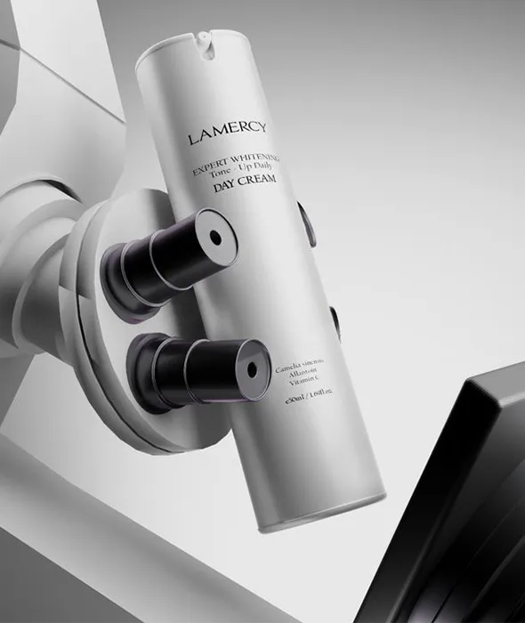

Teknik doğruluk
Mevzuat, test gereklilikleri ve dosya yapısı ürünün gerçek kullanım senaryosuna göre değerlendirilir.
Root Kozmetik hakkında
Root Kozmetik; kozmetik ürün geliştirme, regülasyon ve laboratuvar süreçlerini aynı kalite bakışıyla ele alan Türkiye merkezli bir çözüm ortağıdır.
Her ürün için gereklilikleri sadeleştirir, ekiplerin karar alabileceği net ve uygulanabilir yol haritası oluştururuz.
Kurumsal duruş
Kozmetik markaları için en kritik konu yalnızca bir rapor almak değildir. Formül, ambalaj, etiket, laboratuvar sonucu, pazar bildirimi ve iddia dili aynı dosya içinde tutarlı olmalıdır. Root Kozmetik bu bütünlüğü kurar.

Nasıl çalışırız?
Mevzuat, test gereklilikleri ve dosya yapısı ürünün gerçek kullanım senaryosuna göre değerlendirilir.
Markanızın satış ekipleri, üreticileri ve yurtdışı partnerleri için anlaşılır doküman akışı kurulur.
Eksikler, riskler ve öncelikler açık şekilde listelenir; süreç gereksiz karmaşadan arındırılır.
Birlikte çalışalım
Ürün tipinizi, hedef pazarınızı ve mevcut belgelerinizi paylaşın. Ekibiniz için net bir ön değerlendirme çıkaralım.
İletişime geç